Thickening and thinning parts
You can use the Thicken command to add thickness to a part.

Or use the Thin Wall command to thin a part.
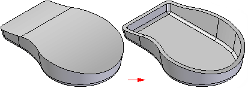
Thicken feature workflow
When you select the Thicken command, the command bar guides you through the following steps:
-
Select Step—Sets the face selection criteria for defining the thicken feature. You can thicken an individual face, a tangentially continuous chain of faces, or the entire body. After you make the selection, click the Accept (check mark).
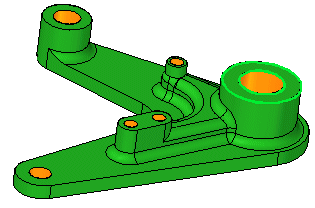
-
Offset—Sets the distance to offset the faces. You can type in an offset distance and click the offset arrow to define the offset direction.
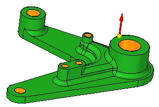
-
Finish Step—Processes the input and finishes the feature. Click the Finish button to finish the thicken feature.
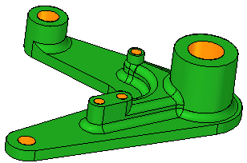
Thin wall feature workflow
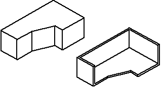
In ordered modeling:
When you select the Thin Wall command, the command bar guides you through the following steps:
-
Common Thickness Step—Defines the common wall thickness and the side you want to apply the thickness to. You can apply the wall thickness toward the inside of the solid, toward the outside, or symmetrically from the solid's face.
-
Open Faces Step—Selects any faces you want to leave open. Open faces are not offset, they are removed from the solid body. For example, if you specify that face (A) should be open, the face is removed and the thin wall feature is created.
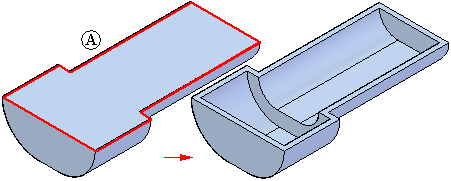
-
You can select multiple open faces when creating the thin wall feature.
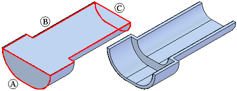
-
When one side of the model has multiple tangent faces, they are all selected as one face and cannot be selected individually.
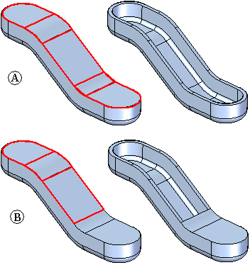
-
Unique Thickness Step—Select any faces you want to apply a unique thickness to, and define the unique thickness. You can select individual or multiple planar and non-planar part faces as walls for unique thickness.
-
Finish Step—Process the input and preview the feature. Since the open faces and unique thickness steps are optional, you can preview the feature any time after the common thickness step.
In synchronous modeling:
When you select the Thin Wall command, the Thin Wall command bar guides you through the following steps:
-
Open Faces Step—Selects any faces you want to leave open. When you click a face, it dynamically updates to display the thin-wall.
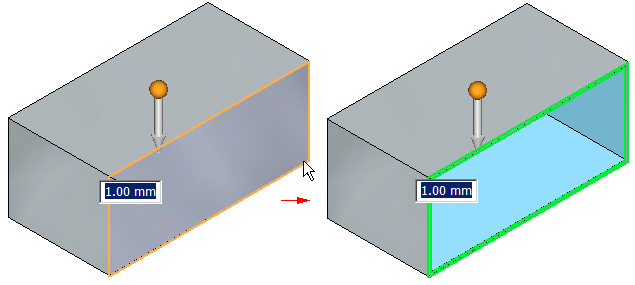
Type the common wall thickness and the click the arrow to define the side you want to apply the thickness to.
-
Exclude/Include—Define the faces you want to include or exclude from the thin wall.
To exclude a face from the thin wall being created, click the button, and then click the face you want to exclude.
If you want to include a face in an existing thin wall, click the
 button, and then click the face you want to include.
button, and then click the face you want to include.
Things to consider when using thin walls
You can thin wall a part more than once. In some cases, you might find it easier to construct a part using multiple thin wall features rather than using profile-based features. For example, you can thin wall a solid box to create a bracket.
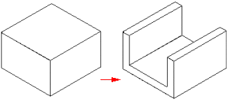
You can then add a protrusion feature to the bracket, and
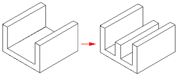
then add a second thin wall feature to hollow the interior of the bracket.
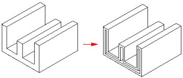